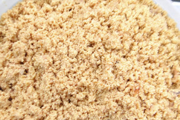
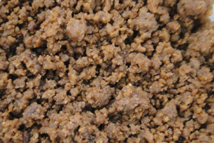
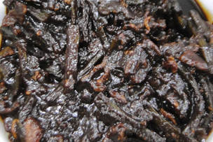

- 2020.02.20
- なめこ味噌汁50円引きキャンペーン実施中(2月20日~2月30日)
- 2020.02.03
- お盆休みのお知らせ！ 2/10から2/11までお休みさせていただきます。
- 2020.01.15
- 熱情がある方、バイト募集します。時給1300円からスタート
- 2020.01.12
- 日テレ「マツコの知らない世界」おにぎり専門家編に放送されました。
- 2020.01.10
- 新しいメニュー牛すじカレー味が発売されました。
おすすめ ベスト10
-

- 1位
- しゃけ
- お値段
- ¥260
- 店長の言葉
- 鮭をオーブンで焼き、手作業で小骨を一本一本丁寧に取り除きます。手間のかかった一品です。
-

- 2位
- 生たらこ
- お値段
- ¥260
- 店長の言葉
- 丁寧に薄皮を叩いて作り上げました。たら子本来の粒加減を味わってください。
-

- 3位
- 焼きたらこ
- お値段
- ¥260
- 店長の言葉
- オーブンでじっくりと焼き上げたたら子。香ばしさと塩加減がお米を引き立てます。
-

- 4位
- 辛子明太子
- お値段
- ¥260
- 店長の言葉
- 薄皮を叩いて自家製の調味料で味付け。自家製の辛子明太子です。お米とのマッチングにこだわった味付けです。
-

- 5位
- 明太子マヨネーズ
- お値段
- ¥260
- 店長の言葉
- イカと辛子明太子であえてあります。ピリ！と辛い味が効いています。辛党の方にはオススメ！です。
-

- 6位
- おかか
- お値段
- ¥260
- 店長の言葉
- 明太子の辛さがマヨネーズでマイルドに仕上げています。明太子とマヨネーズの割合は2：1 マイルドさだけでなくコクも深まっています。
-

- 7位
- 青しそ
- お値段
- ¥260
- 店長の言葉
- しそと大根のお漬物。ご飯が進んでしまう具材です。お茶漬けにも適しています。
-

- 8位
- しらす
- お値段
- ¥260
- 店長の言葉
- 釜茹でのしらす。磯の香りと塩加減がおコメを引き立てます。
-

- 9位
- あさり
- お値段
- ¥260
- 店長の言葉
- 生姜の味が爽やかな佃煮。甘辛く仕上げてあさりの香りも豊かな具材。
-

- 10位
- すしこ
- お値段
- ¥560
- 店長の言葉
- おにぎりの女王様。おにぎりの中の具材の多さも魅力的。ちょっと贅沢な気分になれますよ。一度食べたら病みつき。
アクセス

目印はこの看板
- 住所
- JR大塚駅北口徒歩２分
〒170-0004 東京都豊島区北大塚2-26-3 1F
電話・FAX 03-3910-5617 - 営業時間
- 11:30~24:00/定休日:日曜日/祝・祭日は営業
- お持ち帰り
- お持ち帰り、OK
- 団体
- 200個、300個と大口のご予約承ります


-
 生たら子 260円
生たら子 260円
丁寧に薄皮を叩いて作り上げました。
たら子本来の粒加減を味わってください。
-
 焼きたら子 260円
焼きたら子 260円
オーブンでじっくりと焼き上げたたら子。
香ばしさと塩加減がお米を引き立てます。
-
 しゃけ 260円
しゃけ 260円
鮭をオーブンで焼き、手作業で小骨を一本一本丁寧に取り除きます。
手間のかかった一品です。
-
 辛子明太子 260円
辛子明太子 260円
薄皮を叩いて自家製の調味料で味付け。
自家製の辛子明太子です。
お米とのマッチングにこだわった味付けです。
-
 イカ明太子 260円
イカ明太子 260円
イカと辛子明太子であえてあります。
ピリ！と辛い味が効いています。
辛党の方にはオススメ！です。
-
 しらす 260円
しらす 260円
釜茹でのしらす。
磯の香りと塩加減がおコメを引き立てます。
-
 あさり 260円
あさり 260円
生姜の味が爽やかな佃煮。
甘辛く仕上げてあさりの香りも豊かな具材。
-
 青しそ 260円
青しそ 260円
しそと大根のお漬物。
ご飯が進んでしまう具材です。
お茶漬けにも適しています。
-
 おかか 260円
おかか 260円
香りのよい削り節と白入りゴマで仕上げました。定番の一品。
-
 明太マヨネーズ 260円
明太マヨネーズ 260円
明太子の辛さがマヨネーズでマイルドに仕上げています。
明太子とマヨネーズの割合は2：1
マイルドさだけでなくコクも深まっています。
-

肉そぼろ 300円
合いびき肉を生姜たっぷりで煮込んであります。
ご飯によく合う一品です。
-

スタミナ焼肉 300円
豚肉とにんにくの芽を赤味噌で味付け。
甘味が強いです。シャキシャキな食感が魅力です。
-
 ベーコン ￥300円
ベーコン ￥300円
醤油とみりんで味付け。唐辛子の辛さも加えています。
ピリ辛好きな方にはオススメですよ。
-
 お豚キムチ 300円
お豚キムチ 300円
豚バラ肉と白菜キムチのごま油炒め。
結構辛いですよ！挑戦してみてください。
-
 筋子 ￥550円
筋子 ￥550円
おにぎりの女王様。
おにぎりの中の具材の多さも魅力的。
ちょっと贅沢な気分になれますよ。
一度食べたら病みつき。満足度の高い一品
-
しらす+明太マヨ 300円
明太マヨネーズとしらすの絶妙なバランス
-
たらこ+辛子明太子 300円
焼きたらこ+辛子明太子の絶妙なピリ辛コンビ
-
イカ明太子+あさり 300円
イカ明太子+あさり、海鮮の味を味わってください
-
生たらこ+青しそ 300円
生たらこ+青しそ、海と土の合わせ
-
豚キムチ+筋子 600円
豚キムチ+筋子、以外に合うビールと


 芝漬 260円
芝漬 260円
 ふる漬 260円
ふる漬 260円
 わさび漬 260円
わさび漬 260円
 納豆 260円
納豆 260円
 チーズ 260円
チーズ 260円
{kind=link}